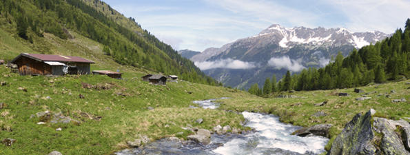

DPD in Österreich

|
DPD - Österreichs führender privater Paketdienst - bewegt jährlich über 50,5 Millionen Pakete. Ein ausgeklügeltes Produkt- und Serviceangebot bietet für jeden Anlass die passende Versandlösung. Wir sorgen dafür, dass Ihr Paket sicher, schnell und zuverlässig an seinen Bestimmungsort gelangt - egal ob in Österreich oder in weitere 230 Länder/Territorien weltweit.
1988 als erster privater Paketdienst gegründet, stützt sich DPD auf die Logistikinfrastruktur seiner Gesellschafter - Österreichs führenden Speditionen Gebrüder Weiss, Lagermax und Schachinger. Rund 1.700 Logistik-ExpertInnen mit insgesamt 1.200 Fahrzeugen sind für Sie rund um die Uhr im Einsatz, damit Ihr Paket schnellst möglich am Ort Ihrer Wahl ankommt. 14.000 österreichische Unternehmen profitieren täglich von maximaler Flexibilität für ihre Pakete und können sich dabei immer auf höchste Service- und Qualitätsstandards verlassen. Denn wir setzen die Standards beim Paketversand - national wie international.
Hohe Leistungs- und Qualitätsstandards - das ist Ihr Vorteil beim Paketdienst DPD. Dabei gehen wir von einem zentralen Leitgedanken aus: Pakete gehören einem Versender oder einem Empfänger. Sie sind Gäste in unserem System. Um sicherzustellen, dass sie auch so behandelt werden, wird bei uns nach detaillierten Organisationsanweisungen gearbeitet - ein System der Qualitätssicherung (ISO 9001).